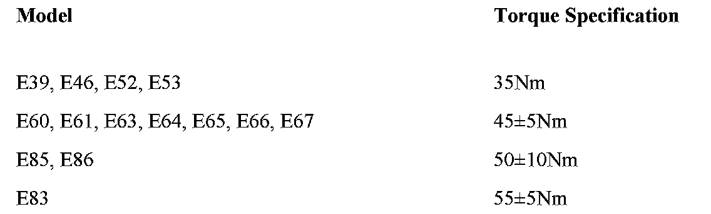

Fuel System - Fuel Tank Lock Ring Torque Spec Missing
SI B16 04 12Fuel Supply Systems
February 2012
Technical Service
SUBJECT
Fuel Tank Access Cover Locking Ring Torque Specification Missing from ISTA/D
MODEL
E39 (5 Series)
E46 (3 Series)
E52 (Z8)
E53 (X5)
E60 and E61 (5 Series)
E63 and E64 (6 Series)
E65, E66 and E67 (7 Series)
E85 and E86 (Z4)
E83 (X3)
INFORMATION
The torque specification for the fuel tank access cover locking ring is missing from the current level of ISTA/D. Refer to the table below for the proper torque specification.

The missing torque specification will be corrected in ISTA/D 2.31.0.
WARRANTY INFORMATION
For information only